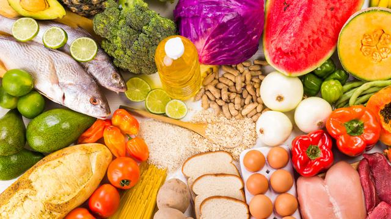

REKOMENDASI MAKANAN SEHAT UNTUK DIKONSUMSI SETIAP HARI

Menjaga gaya hidup sehat bisa dilakukan tidak hanya dengan olahraga saja, tetapi juga dengan memperhatikan pola makan dan apa saja yang dikonsumsi sehari-hari.
Kamu perlu mengkonsumsi buah-buahan, sayuran hijau, dan mengurangi makanan dengan pengawet atau bahan buatan yang tidak alami agar badan terasa sehat dan tidak sering jatuh sakit.
Terdapat beberapa makanan yang masuk ke dalam kategori superfood yang sangat baik untuk menjaga kekebalan tubuh dari berbagai macam penyakit dan membuat kamu merasa sehat.
Baca juga:Manfaat menerapkan pola hidup sehat
Next